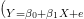
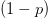
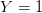
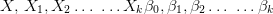
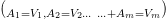
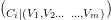

This paper appears in: , Issue Date: , Written by:
© 2013 IEEE
To developing a good quality software as per customer needs is a very much challenging task. The main challenges are, completing the project at low cost and under time limit without losing the product quality. The success, acceptability and failure of a software is depends upon its level of quality and certain level of defects [11]. Software quality is very popular concept. Its appearance may not be explainable, but its deprivation can be easily perceived within moments.
In abstract, quality of software can be considered as the satisfactory behavior of the product. But what is the satisfactory behavior of the software? Satisfactory behavior can be explained on the bases of functional and nonfunctional behavior of the software. Functional behavior can pertain to particular functions that define the ability of software. Nonfunctional behavior can be look-feel, design and cost of software. But just because a user is completing his work using the software, does not mean the good quality of a software but it may possible that he compromised with the quality.
In present scenario software plays a critical role in business, government, and societies and many other fields. So improving software productivity and quality is an important goal of software engineering. Software quality has a profound impact on overall system performance. Improving the quality of software begins with defect reduction.
Software productivity and quality can be increase if, software developers are continuously applying data mining algorithm to various software development task. This paper discusses such mining methodologies that are used in practice to making plan for managing the software defects.
Software developers accrue software metrics and defect data during the software development, and then process this data for introducing defect prediction models. These models also help to developers tactically allocate resources to the project, for example assigning more monitoring and testing resources to the high error prone modules.
The effectiveness of software quality estimation models are influenced by two key qualities of data factors: (1) All software data metrics that are used to build the defect prediction models should be collected with well-defined attribute (2) the degree of fault-prone attributes in the software development data sets. Many studies have intimates that many redundant attributes are exists in various software data repositories [1], [2]. In addition, studies also show that all features are not having equal importance. A good selection of a subset with all attributes that are most concerned with to the absolute class of features is necessary for better predictions [3]. The purpose of defection prediction models is to classify the software program modules into the faulty and non-faulty groups [4]. The numbers of faulty modules are often much less than the non-faulty modules and to identify the faulty modules is not an easy task.
The software development process is very hard to predict. Every study shown that software developing organization, are not able to predict that how much time it will take to develop good quality software with certain level of defects. Good quality software development is an art and based on knowledge of the developers but work experience is also most considerable. A software developer cannot learn this art by study; it is a matter of long time work practices.
The term quality means many different things to different peoples:
As above we define software quality that, it is different things for different peoples. For example, quality for a software user is related with its performance and response time and whereas quality for a software programmer aspect may be error free and excellent written program code.
Here we are discussing below some definitions that are given by some popular researchers.
The definition of quality is given by Shewhart in his book [9] is as follows.
“There are two common aspects of quality: One of them has to do with the consideration of the quality of a thing as an objective reality independent of the existence of man. The other has to do with what we think, feel or sense as a result of the objective reality. In other word, there is a subjective side of quality”.
Shewhart consider two aspects in his definition of quality, one is objective and other subjective. According his objective aspect, quality product should satisfy the needs of customers and according to his subjective aspect quality product should match the all requirements gathered by developer perfectly.
The definition of quality is given by Deming in his book [6] is as follows.
“The problem inherent in attempts to define the quality of a product, almost any product, where stated by the master Walter A. Shewhart. The difficulty in defining quality is to translate future needs of the user into measurable characteristics, so that a product can be designed and turned out to give satisfaction at a price that the user will pay. This is not easy, and as soon as one feels fairly successful in the endeavor, he finds that the needs of the consumer have changed, competitors have moved in etc.”
Deming forcefully stated the quality of a software product can only defined according to satisfaction of product users. He stated quality is judging the performance of the product.
The definition of quality is given by Feigenbaum in his book [7] is as follows.
“Quality is a customer determination, not an engineer's determination, not a marketing determination, nor a general management determination. It is based on upon the customer's
actual experience with the product or service, measured against his or her requirements-stated or unstated, conscious or merely sensed, technically operational or entirely subjective-and always representing a moving target in a competitive market.
Product and service quality can be defined as: The total composite product and service characteristics of marketing, engineering, manufacture and maintenance though witch the product and service in use will meet the expectations of the customer”.
Feigenbaum emphasize in his definition of quality that the only customer can measure the product quality by his personal working experience. His definition is the costumer oriented definition. According to Feigenbaum, only those products have good quality, they accurately match the customer needs.
The definition of quality is given by Crosby in his book [5] is as follows.
“The first erroneous assumption is that quality means goodness, or luxury or shininess. The word “quality” is often used to signify the relative worth of something in such phrases as “good quality”, “bad quality” and “quality of life”-which means different things to each and every person. As follows quality must be defined as “conformance to requirements” if we are to manage it. Consequently, the nonconformance detected is the absence of quality, quality problems become nonconformance problems, and quality becomes definable”.
Crosby describes the quality as “conformance of requirements”. He also stated a product can match its quality if it is developed according to requirements of the customer. He advised to developers that they should use perfect skills and good tools, when they are gathering the requirements from the customers. According to Crosby quality can be measured. If cost of product, performance, and development time is match with the requirements given by the customer then the product would be good quality product.
The definition of quality is given by Juran in his book [8] is as follows.
“The word quality has multiple meanings. Two of those meanings dominate the use of the word: 1) Quality consists of those product features which meet the need of customers and thereby provide product satisfaction. 2) Quality consists of freedom from deficiencies. Nevertheless, in a handbook such as this it is most convenient to standardize on a short definition of the word quality as'fitness for use'”.
Juran define the quality by two points. The first is quality product consist all features that satisfied the actual needs of customer and second, good quality product should be defect free.
According to all above researcher's views and also many more others, they are not discussed here; the good quality software product must satisfy the product users by its performance, accuracy and reliability. But only defect free software can do so. Thus, first we will know about the software defect and afterward discuss about how sweat out from these defects.
It is very important to know about software defects. We many time discuss about defect in the various explanations of software in this paper. But it is necessary to know that what may a software defect. The hypothesis of software defect is changes in different contexts.
It is suspected that there is not to be universally acceptable definition of the term software defect. A frequently proposed software defect is an error, flaw, bug, mistake, failure, or fault [12] in a software program or model that may generate an inaccurate or unexpected outcome, or hamper the software from behaving as intended. A project team always aspired to produce quality software product with zero or certain level of defects. More risky modules of the software should be identify earlier as possible, to increase the software quality. Occurrence of software defects mostly decreases the product quality and increases the development time. In addition, defects identification and rectification is the very much time consuming and most expensive task [14], [15]. But reality is that the elimination of each and every defect is not possible [16] but decreasing the scope of defects and their opposite impacts on the product quality can be achievable.
One common definition of a software defect is given by Kaner et al [13]
“A mismatch between the program and its specification is an error in the program if and only if the specification exists and is correct”.
However, there are many other points of views given by various studies but we discuss some of them.
They underline in their study that only findings of defect in the code can be consider as defects: if defects caused the system-failure or drive unsatisfactory outputs.
The term fault is described as the means of an inaccurate operation into the various software development processes. Hence, defects are considered as wrong program code, which may or may not produce the result as a system failure.
This point of view considers a defect as a cause of quality degrades and, is countable every time you make a program change.
The above considerations are quite different and increase the possibilities of causing many changes in thinking of many peoples whose doing studies on this topic.
In this paper we have elected the definition of defects i.e.
“Defects are deviations from quality of a software product”.
According to all above definitions, presence of defects harms the software quality and also degrades it. Thus, elimination of defect becomes very important to preserve the software quality. To eliminate the defects from the software, it is necessary to correct the defective modules where defects are present.
Before going to apply the defect correction process on software product, it is necessary to pay attention on some important facts that are given by various popular researchers.
An internal report of Jet Propulsion Laboratory (JPL) stated that the 6.5 to nearly 9 defects per KLOC found during the system test. This testing process takes more than 2 years. In spite of, there is no guarantee that all defects were founded [20].
According the study of IBM Systems Sciences Institute the relative cost of fixing the defects during development of software is as respectively in designing phase, in testing phase and in implementation phase is 1, 15 and 6.5 times more expensive. However after the development and in maintenance phase, the cost of fixing the defects is 100 times more expensive then designing phase [22].
If you can prevent defects or detect and remove them early, you can realize a significant schedule benefits. Studies have found that reworking defective requirements, design, and code typically consumes 40 to 50 percent of the total cost of software development (Jones 1986). As a rule of thumb, every hour you spend on defect prevention will reduce your repair time from three to ten hours. In the worst case, reworking a software requirements problem once the software is in operation typically costs 50 to 200 times what it would take to rework the problem in the requirements stage (Boehm and Papaccio 1988) [23].
In system test, however, the time to find and fix defects typically extends too many hours or even days. While most of these defects are fixed rather quickly, some take much longer. The average time to find and fix each defect is generally 10 to 20 or more hours [14].
The practice of designing while coding is error prone. From data on 3,240 programs written in Personal Software Process (PSP) courses, the SEI has found that experienced developers inject fewer defects when designing (2.0 defects per hour) than when they design while coding (4.6 defects per hour) [24].
An ineffective or wrong attempt to fixing a defect can be inject some new defects. The average possibility of accidently injection of defects may be 7 percent, although the range may be less than 1 percent to more than 20 percent [25].
A study commissioned by the United States Department of Commerce's National Institute of Standards and Technology (NIST) found that software defects cost the U.S. economy almost $60 billion annually. The study also found that about 80 percent of development costs are consumed by software developers identifying and correcting defects [15] [10].
During 2008, IDC conducted a survey of 139 North American companies and they asked to them that how many organizations found serious problems post-code review, 25.5% said “very often” or “all the time,” and 41% said they had issues with defects [26].
The above discussions proclaim that defect correction is not efficient policy. When we apply corrections to palm off the defects, probably it may inject more defects [25] or take much longer time [14]. The correction during product development is much expensive and time consuming task, in spite of there is no guarantee of removal of all defects [20].
Thus we emphasize that defect prediction during software development process, is batter way to sweat out the defects and to improve the software product quality.
Defect prediction is a process or a method that provides the guidelines for testing activities. The task of defect prediction is tracing the defective components in software before starting of testing phase. Occurrence of defects is compulsory, but we should attempt to minimize the quantity of defects. It is used to make an ordering of modules and also labeled them as either defective or non-defective.
Defect prediction prominently tends to reduce the development time, rework effort, and cost of the software engineering projects and concurrently increases the customer satisfaction, quality and reliable of software. It also helps us to better understand the software quality and also provide the methods to control it. Therefore, defect prediction rehearse is extremely essential to acquire the software quality and also to learn from past mistakes.
The software can be categories among the groups: with zero defect density such as aerospace engineering purposes software, and with medium defect density such as operating systems and delicate system software, and the group that can bear higher grade defect density such as non-delicate user applications [11].
In the case of zero defect density category software, the defects are very much crucial and defected software is not considerable and becomes worthless. So the software development organizations are fully focused with high efforts on discovering all defects and fixing them. A defect prediction methodology help us to predicting and location the defects whereby the organization could deliver a defect-free software product.
In the case of medium and high defect density categories, the software is developed with certain level of density which is decided according criticality of the application. To decide the level of defect density for the software, some relations are defined among the defect density and time-to-failure. With the help of these relations, the software developing organization can target a defect density levels and as according arrange the testing and correction phase to lead up to that defect level.
The defect prediction is much valuable when the delivery of software product is time bounded. In present scenario, software development organizations want to minimize development time and decrease the overall project cost and development efforts [27].
The defect prediction methodologies help such organizations they want to update their software products into next version by predicting the necessary changed that have to make for updating the products. The defect prediction methodologies also provide some guidelines to identify the sources of defects. These sources of defects may be programmer's inadequacy, failure in requirements gathering and designing mistakes. If software development units have got idea about source of defect then they can take necessary precautions for their protection. A defect prediction model with source identification can also provide significant ideas related with formation of bottlenecks in the software development process [11].
There are various data mining methodologies exist to develop the defect prediction model. Those data mining methodologies use the software metrics and defect data collected during the software development life cycle and build defect prediction models to ensure the level of defect density of the target program modules of software product. These defect prediction models helps the software developers to make more focus on much error prone software modules with more intelligently and also with high potential.
As we know the importance of data for any type of organizations to their present and feature perspectives and growth. The various types of data (also defect data) are collected from varieties of sources and incorporate in to various data repositories. The data density in these repositories has been rapidly increasing. As we know, all most all public or private fields are data-esurient to being data-rich and needed some tools and techniques to cope these large data sets. These data are also directly affects our daily life, in which the computers are surrounding us and use data processing algorithms and tools to help us. For example, finding the quickest path, online sold items, auto faces tagging in pictures.
As we already discuss the performance of defect prediction model is depends on accuracy of defect data that are used to develop the prediction model. Thus it become necessary to identify such tools and techniques that are help us to find data sets with high degree of useful attributes and features from hug amount of data.
Data mining is a red-hot sub-discipline for software engineering researchers with the purpose of defining some tool and techniques for automatic interpretation of large data sets. The general aim of data mining is to find useful and interpretable patterns in data. This is a rummage for processing the historical data (generally large in size) to find-out the consistent patterns or/and well-ordered relations between variables. It is used for the purpose of validating the results by applying the pre-known patterns to new subsets of data [29]. The origin of data mining is derived from three areas: machine learning, classical statistics and artificial intelligence [28] so it inherits various properties from these areas.
Task based division of data mining is as predictive tasks and descriptive tasks. The ultimate goal of data mining is prediction; hence, the predictive data mining is the most common type of data mining and most applicable for the purpose of businesses or life concerns [30].
Today's, there are various statistical and machine learning data mining methodologies have been developed for the purpose of defect prediction during software development. We are going to discuss some of them.
Logistic regression is a classification technique and applicable in-case of output variables is divided into either fault-prone or non-fault-prone. LR is not to suppose that the output variable or the errors objects are normally distributed. The liner regression equation for LR technique is defined as $(_{Y=\beta_{0}+\beta_{1}X+e}\ )$ [31]. The form of the logistic regression model is: TeX Source$$log\left({p\over l-p}\right)=\beta_{0}+\beta_{1}X_{1}+\beta_{2}X_{2}+\ldots\ \ldots+\beta_{k}X_{k}$$
Where $Y$ is the probability of defects founded in each module that are missed by testing and varies from 0 to $(1-p)$. If $Y=1$ consider as $p$ and referred as binomial proportion are the explanatory variables ${ X},\, X_{1}, X_{2}\ldots\ \ldots X_{k}\beta_{0},\beta_{1},\beta_{2}\ldots\ \ldots\beta_{k}$ are the regression parameters.
C4.5 is developed by Ross Quinlan and, is a most popular tree structure classifier algorithm to develop a defect prediction model [32]. C4.5 deals with both continuous and discrete attributes and missing values. It builds a decision tree according to the data attribute of training data. In this tree, the internal nodes represent the different attributes, branches represent the value of a correspondent attributes and the leaf nodes are as according the classification of the output variables.
Association rule mining finds relative attribute relationships, e.g., frequent patterns, associations, correlations, or expected reasonable structures, among data sets store in data repositories. The useful association rules are measured by both confidence and support.
Random forests is combination of tree-structured classifiers [33]. Each tree depends on value of the random vector designed identically and remain same for all tree within the forest. The forest of the RF is select on the base of majority votes In RF the each classification tree is constructed by using a bootstrap sample of the data. The output does produce after considering at least 10 trees.
The naive Bayes classifier is based on the Bayesian theorem that is based on probability theory. It process all data attribute uniquely and consider with equal importance. The naïve Bayes classifier leveled an object $s_{K}$ with the value of attribute $(_{A_{1}=V_{1}, A_{2}=V_{2}\ldots\ \ldots+A_{m}=V_{m}})$ to class $c_{i}$ with highest probability $(_{C_{i}\vert (V_{1}, V_{2}\ldots\ \ldots, V_{m})})$ for each i. The results were produce using default parameter values.
Support Vector Machine is a machine learning algorithm and based on the kernel method. The kernel method algorithm depends on the data only through dot product [34]. SVM classifier is highly used for bioinformatics data due to its high accuracy. It categories the data sets by identifying an optimal linear separator. This separator variable shows the difference among one data sets and another data set that exist in same repository.
The development of artificial neural networks is based on biological neurons [35]. In ANN the neurons considers as nodes and are remain connected through direct links. The links between the nodes are leveled by some numeric values and represent the strength of connection [35]. The ANN output is considered by calculating the weight of each neuron and passes it to other.
Genetic Programming is a search based computation technique and, is an extension of genetic algorithms [36]. The all structures in GP are not uniquely constant length character strings but programs, when they execute, are the main solutions to the problem. For the symbol based regression application, programs are explained as a syntax trees, the nodes showing the instructions for execution and are called functions for example −, *, +, /, while the of tree terminals consist the independent variables of the target problem and randomly constants (e.g. x, y, 3).
The working of Fuzzy Logic model is based value approximation. It reasoning based theory. It is only work for Boolean values that are true or false. Fuzzy Logic not defines statement at certain level of its degree. Its output is like a human answer e. g. yes or no, possible or impossible.
Genetic Algorithms is based on machine learning approach and is behave like to the human gene. It generates outputs based on the techniques much similar like in nature mutation, selection, crossover etc.
The output of Genetic Algorithm is represented in the form of tree and known as chromosome. The produce the output the nodes of the tree being processed and set of solutions are represented as population.
According to our study, only those software products are acceptable and become popular, if they satisfy the user's actual needs by their performance, accuracy and reliability. The possibilities of such software products are only, when they are defects free or with certain level of defects. To make a software product defect free, defect prediction is much efficient task in compare to defect correction.
We also discussed Data Mining and its various methodologies in brief that are used to develop defect prediction model without drilldowns in a particular methodology because in this paper our main aim is to explain that vestigial defects are the main reason for degradation in software quality and this problem can be solve using Data Mining methodologies.
I pay homage to my mother Late Smt. Vimla Singh. She vitalizes me. She used to care me, love me, and give me such strength whereby I can fight with all hardness of life. I cannot complete my any work without memorize her. I also cannot explain her contributions for me and also cannot explain how much importance she has for me.
None
Normal | Large
 About IEEE Xplore | Contact | Help | Terms of Use | Nondiscrimination Policy | Site Map | Privacy & Opting Out of Cookies
About IEEE Xplore | Contact | Help | Terms of Use | Nondiscrimination Policy | Site Map | Privacy & Opting Out of Cookies
A not-for-profit organization, IEEE is the world's largest professional association for the advancement of technology.
© Copyright 2014 IEEE - All rights reserved. Use of this web site signifies your agreement to the terms and conditions.